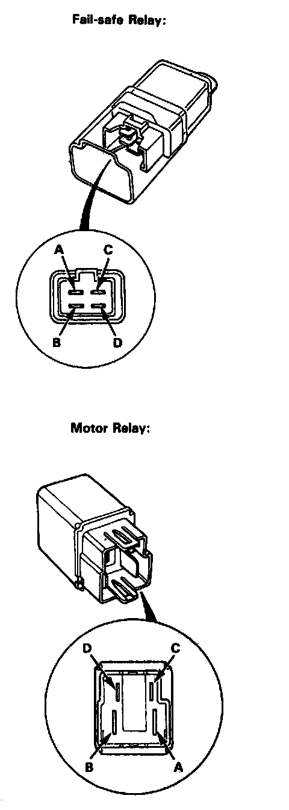

Fail Safe Relay: Testing and Inspection

Relay Inspection
1. Remove the fail-safe relays and motor relay.
2. Check for continuity between terminals C and D. There should be continuity.
3. Check for continuity between terminals A and B. There should be continuity when the battery is connected between terminals C and D. There should no continuity when the battery is disconnected.